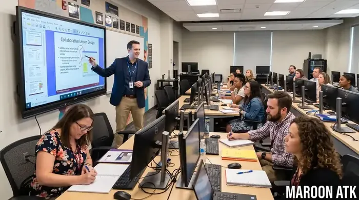
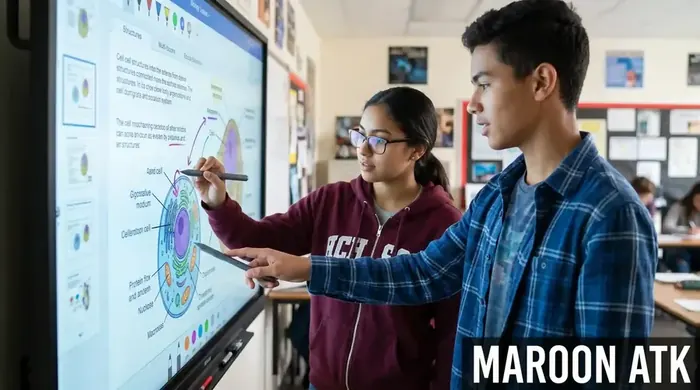

Urgensi Pengadaan Interactive Flat Panel Sekolah di Era Digital
Program pengadaan interactive flat panel sekolah adalah investasi strategis untuk memodernisasi sarana pembelajaran melalui instalasi papan tulis digital 4K UHD Touchscreen. Perangkat ini menggabungkan fungsi layar proyektor, papan tulis interaktif 40-Point Multi-Touch, sistem audio terintegrasi, serta modul Dual OS (Android & Windows) yang sah secara legalitas perpajakan e-Faktur PPN 11% untuk kebutuhan lembaga pendidikan dan sekolah swasta/pemerintah.
Dunia pendidikan saat ini menuntut adopsi metode kurikulum yang dinamis dan berorientasi pada keterlibatan aktif para siswa. Penggunaan papan tulis spidol konvensional maupun proyektor redup sering kali membatasi guru dalam menyajikan materi visual interaktif seperti animasi 3D, simulasi laboratorium digital, dan kolaborasi pengerjaan soal secara paralel.
Melalui interactive flat panel sekolah, institusi pendidikan dapat menciptakan ekosistem *smart classroom* yang efektif. Sebagai distributor resmi sarana edukasi, interactive flat panel Maroon ATK berkomitmen menyajikan panduan pengadaan taktis bagi Panitia Sarpras, Pengurus Yayasan Pendidikan, dan Kepala Sekolah di seluruh Indonesia.

Mengenal Papan Tulis Digital Smart Board: Spesifikasi & Panduan Memilih
Panduan spesifikasi papan tulis digital interaktif 4K UHD dan fitur screen mirroring untuk ruang kelas modern.
Spesifikasi Kunci IFP yang Wajib Masuk dalam Dokumen TOR Pengadaan
Agar investasi sarana pendidikan berlangsung jangka panjang dan tidak cepat rusak akibat penggunaan intensif oleh siswa, Panitia Pengadaan wajib memastikan kriteria teknis berikut:
1. Lapisan Tempered Glass 4mm Anti-Glare & Anti-Sinar Biru
Layar IFP wajib dilindungi oleh *7H Mohs Hardness Tempered Glass* setebal 4mm yang tahan benturan fisik. Fitur *Anti-Glare (AG)* memantulkan cahaya lampu kelas agar tulisan tetap terlihat jelas dari sudut manapun, serta dilengkapi sertifikasi *Flicker-Free* dan *Low Blue Light* untuk melindungi kesehatan mata siswa.
2. Presisi Sentuhan 40-Point Multi-Touch & Dual Stylus
Teknologi sensor *Infrared (IR) Touch* generasi terbaru memungkinkan hingga 4 orang siswa menulis atau menggambar secara bersamaan di atas layar tanpa mengalami lag (delay). Pena stylus bawaan dapat membedakan dua warna berbeda secara otomatis antara ujung halus dan tebal.

Siswa sekolah berinteraksi bersamaan pada layar interaktif 4K berteknologi 40-point touch screen saat pembelajaran simulasi sains.
3. Konfigurasi Dual-Boot Berbasis Android & Windows)
Keberadaan modul OPS (Open Pluggable Specification) PC berprosesor Intel Core i5/i7 yang dapat dilepas-pasang sangat krusial. Sistem ganda ini memungkinkan guru berpindah dari mode Android (papan tulis instan) ke mode Windows 11 Pro untuk menjalankan aplikasi pembelajaran kompleks seperti Geogebra atau lab bahasa.

Berapa Harga Videotron LED Indoor per m2 Terpasang di Jakarta?
Panduan estimasi biaya display layar besar untuk aula dan auditorium sekolah.
Matriks Ukuran Layar IFP Sesuai Kapasitas Ruang Kelas
Pilihlah bentang diagonal layar yang proporsional dengan jarak duduk siswa terbelakang agar keterbacaan materi tetap terjamin:
| Ukuran Panel Layar | Rekomendasi Kapasitas Ruang Kelas | Sistem Operasi (Dual OS) | Fitur Kolaborasi Utama |
|---|---|---|---|
| Compact 65 Inci | 15 - 25 Siswa (Lab / Small Class) | Android 13 / OPS i5 Optional | Wireless Screen Mirroring 4 Device, Whiteboard App. |
| Standard 75 Inci | 30 - 45 Siswa (Ruang Kelas Reguler) | Android 13 + OPS Intel i5 (8GB/256GB) | 40-Point Touch, Anti-Glare Glass, Built-in 8 Mic Array. |
| Grand 86 Inci | > 50 Siswa (Aula / Hall Kuliah) | Android 13 + OPS Intel i7 (16GB/512GB) | 4K Auto-Framing Camera 48MP, Subwoofer Speaker 2x20W. |

Sesi pelatihan dan pendampingan pengoperasian papan tulis interaktif digital oleh tim teknis Maroon ATK untuk para guru dan staf pengajar.

SOP Pengadaan Furniture Kantor B2B: Panduan untuk Purchasing Team
Panduan pengadaan furniture dan meja kursi sekolah yang memenuhi standar ergonomi nasional.
Keunggulan Layanan Pengadaan IFP Sekolah di Maroon ATK
Pengadaan unit layar interaktif mahal memerlukan jaminan keamanan dan kemudahan transaksi legal bagi pihak sekolah maupun yayasan:
- Kelengkapan Legalitas Pajak e-Faktur: Kami menerbitkan Surat Penawaran Harga (SPH) resmi bersurat PT, didukung dokumen Pengusaha Kena Pajak (PKP), dan e-Faktur PPN 11% yang siap diaudit.
- Pelatihan Guru Gratis (ToT): Kami tidak sekadar mengirim barang. Tim kami menyelenggarakan pelatihan pengoperasian perangkat hingga para guru mahir mengajar menggunakan aplikasi interaktif.
- Garansi Resmi 3 Tahun & On-Site Support: Layanan perbaikan dan penggantian modul panel jika terjadi kerusakan teknis di lokasi sekolah Anda.
Ajukan Penawaran Harga IFP Sekolah Resmi Sekarang!
Dapatkan demo produk langsung di sekolah Anda, dokumen SPH resmi, dan konsultasi gratis dari spesialis Maroon ATK.
Kesimpulan: Mewujudkan Kelas Interaktif Bersama Maroon ATK
Ringkasan Kunci Pengadaan Interactive Flat Panel Sekolah
Modernisasi sarana pembelajaran melalui pengadaan interactive flat panel sekolah merupakan langkah konkrit dalam meningkatkan mutu pendidikan dan reputasi lembaga di mata orang tua murid.
- Pilih Ukuran Tepat: Gunakan panel 75 inci sebagai standar emas untuk ruang kelas reguler.
- Utamakan Fitur Pembelajaran: Kaca tempered anti-glare, presisi multi-touch 40 titik, dan sistem Dual OS Wajib ada.
- Pilih Distributor Bonafide: Pastikan penyedia memfasilitasi legalitas PT resmi, e-Faktur PPN, garansi 3 tahun, dan program pelatihan guru dari Maroon ATK.
Pertanyaan Umum (FAQ) Pengadaan IFP Sekolah
Untuk ruang kelas standar berkapasitas 30-40 siswa, ukuran 75 inci 4K UHD merupakan standar emas ideal. Sedangkan ukuran 65 inci cocok untuk laboratorium/ruang les kecil, dan ukuran 86 inci ditujukan untuk hall auditorium sekolah atau ruang kuliah.
Ya, unit IFP yang kami sediakan dilengkapi dengan sistem Dual OS (Android bawaan dan modul OPS PC Windows 11 Pro) sehingga guru dapat mengoperasikan software pembelajaran interaktif tanpa kendala kompatibilitas.
Maroon ATK memberikan program pelatihan dan pendampingan gratis bagi para guru mencakup pengoperasian papan tulis digital, mirroring multi-screen siswa, serta pemeliharaan berkala oleh teknisi internal kami.

Arby Ardiansyah
Konsultan sarana pendidikan digital berfokus pada integrasi teknologi smart classroom, papan tulis interaktif, dan e-procurement instansi sekolah di Indonesia.